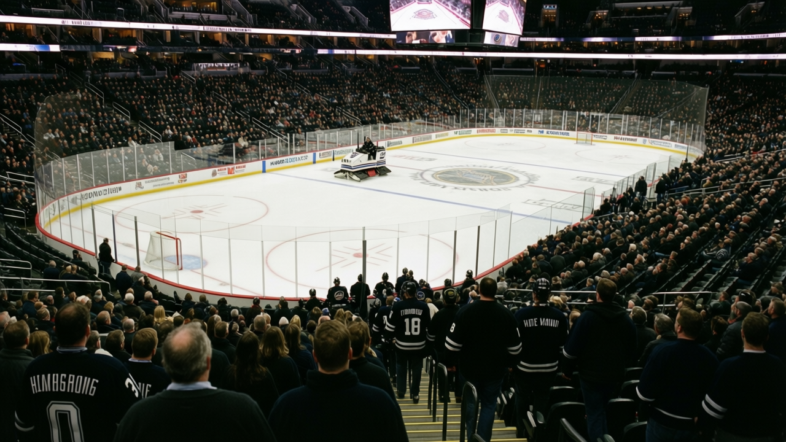

5 AND 14 AT HOME, $77 A SEAT, $23.68 MILLION IN PROFIT: CHICAGO HAS FIGURED OUT HOW TO FAIL RICH
The worst team in hockey plays in front of 15,121 people who pay $77 each. The building prints money. Nobody upstairs is losing a night's sleep.
 Mickey "The Mick" DonnellyColumnist, ex-goalie · The Penalty Box
Mickey "The Mick" DonnellyColumnist, ex-goalie · The Penalty Box
Chicago has 28 points. That is the fewest in hockey. Nine wins, 21 losses, 6 overtime losses, 38 games gone, and the  Chicago Blackhawks Blackhawks are the bottom of this league.
Chicago Blackhawks Blackhawks are the bottom of this league.
Here's the number that makes me want to put my glove through the glass: they made $23.68 million last season. Ninth most profit in a 30-team league. The worst team in hockey, and someone's getting a bonus.
They run the third-cheapest payroll in the league at $39.27 million. Only  Minnesota Wild and
Minnesota Wild and  Atlanta Thrashers spend less. And the reward for that restraint? A $77 ticket, 15,121 people per game showing up, and a home record of 5 and 14. Five wins in 19 games in front of your own building. You drive to the rink, you pay $77, you park, you buy a beer, and you watch your team get beaten up in their own barn. That's what $77 buys in Chicago.
Atlanta Thrashers spend less. And the reward for that restraint? A $77 ticket, 15,121 people per game showing up, and a home record of 5 and 14. Five wins in 19 games in front of your own building. You drive to the rink, you pay $77, you park, you buy a beer, and you watch your team get beaten up in their own barn. That's what $77 buys in Chicago.
Revenue was $49.43 million against a $39.27 million payroll. Ten million dollars more coming in than going out, and the product on the ice is 125 goals for, 154 against, minus-29. The only reason this franchise doesn't try harder is that you keep buying the ticket.
The roster tells you everything about the priorities
 Eric Daze87 has 69 points.
Eric Daze87 has 69 points.  Alexei Zhamnov85 has 63 points. Between them, they've carried an entire franchise on two backs. Nobody else on this team cracks the top 30 in scoring. This team drafted and developed nobody worth watching and decided $39 million was enough because $39 million was enough to keep the lights on.
Alexei Zhamnov85 has 63 points. Between them, they've carried an entire franchise on two backs. Nobody else on this team cracks the top 30 in scoring. This team drafted and developed nobody worth watching and decided $39 million was enough because $39 million was enough to keep the lights on.
The Development Index has one Chicago Blackhawks player among the league's risers: Igor Radulov74, a 22-year-old left winger sitting at +6 form. That's the whole development pipeline.
And then there's  Ryan VandenBussche67, 31 years old, 34 games, 2 points. He's a minus-2 on the Index, down from a base of 71. Thirty-four games for two points, a roster spot that burns a young man's ice time and gets nothing back, and nobody upstairs cares because the money comes in anyway.
Ryan VandenBussche67, 31 years old, 34 games, 2 points. He's a minus-2 on the Index, down from a base of 71. Thirty-four games for two points, a roster spot that burns a young man's ice time and gets nothing back, and nobody upstairs cares because the money comes in anyway.

The math nobody in the front office will do
Chicago's $1.40 million per point is not the worst in the league. That's actually the problem.  Philadelphia Flyers pays $1.93 million per point and
Philadelphia Flyers pays $1.93 million per point and  St. Louis Blues pays $1.95 million. Those are the teams where ownership can't sleep at night. Chicago doesn't have that pressure. They're cheap enough that even losing produces a profit. The only person who cares that Chicago is the worst team in hockey is the guy paying $77 on a Tuesday night.
St. Louis Blues pays $1.95 million. Those are the teams where ownership can't sleep at night. Chicago doesn't have that pressure. They're cheap enough that even losing produces a profit. The only person who cares that Chicago is the worst team in hockey is the guy paying $77 on a Tuesday night.
The room sits at 88.6 morale. Not the lowest. Not even close. These guys aren't in a mutiny. They're on a team that doesn't threaten anybody, and the front office knows it, and the fans keep showing up at 15,121 per night, and the revenue line goes up, and the payroll stays at $39 million, and the $23 million flows to whoever sits in the tall office and looks at a spreadsheet Doug Reimer would be proud of.
You want to know why the Chicago Blackhawks Blackhawks will still be bad in March? Because you'll still be in the building. $77. Five and fourteen at home. Fifteen thousand of you. And the cash register doesn't care who wins.